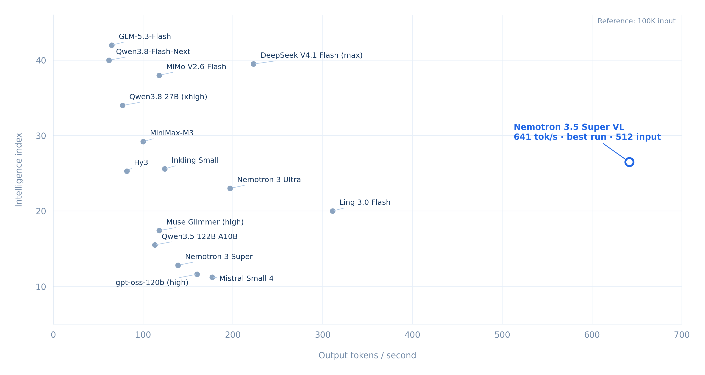

NVIDIA released Nemotron 3.5 Super VL on October 15, and we reached 11,840 aggregate output tokens/sec on one GB300 with 256 concurrent requests. This blog post is a walkthrough of all the tricks we used to get there.
For context, this model is specifically designed to be a really fast, locally hosted model that can perform reasonably well across domains like document intelligence, coding, financial accounting, etc.

For the cluster of models in the same category, it turns out to be much, much faster than the others. And the benefit of having such a small, fast model is that you can post train it for special use cases.
At Cline, we are especially excited about easy to host open weight models, and we try to get the best inference config for fast and highly concurrent inference. Much like our work on AI Evals, we find that there are tons of nuances in inference engineering around choosing the particular thing you want to optimize for.
Thanks to our collaboration with the NVIDIA team, we got to play with an NVIDIA DGX Station and we wanted to maximize the model throughput on it. This GPU has a very powerful config for a single machine with a 252 GB GPU memory budget.
Starting out with the base config of vLLM 0.32.0rc1.dev190+g3f1bcfd82, which took 67 GB of memory, we were already
getting 6,058 aggregate tokens per second on a test of 512 input/output tokens with 256 concurrent streams. It's interesting to note
that even the base config of the model is VERY strong and already tuned for high throughput inference.
Here are a few tricks we applied to raise the throughput(See Code here):
1. MTP Decoding
The very first trick we applied was the standard one, which is the MTP decoding head that came packed with the model. This is the simplest optimization, and it can be done a few different ways, so we tried MTP3, which got us to roughly 7,000 tokens per second. We used the OMP1 config because single threading is more convenient here, as multiple threads lead to coordination overhead.
2. Async Scheduling
When scaling to multiple concurrent outputs, especially in a case like ours, the GPU does a lot of kernel work, but the CPU does a lot of scheduling work. So by using asynchronous scheduling, you aren’t blocked all the time while the GPU is processing.
3. Switching the Mamba kernel back to FlashInfer
This model supports both KV cache and Mamba backend layers.
Attention layers use KV cache and Mamba layers use recurrent state and short convolution history. In this use case, since we just wanted to hill climb on throughput, we tried the FlashInfer kernel, which gave us a jump to 7,800 tokens per second. Again, it's not really clear to us why this worked but it worked as one of the large set of experiments we threw at the GPU. It's plausible that for certain GPU config this doesn’t work and that’s okay.
4. Switching the lookahead from MTP 3 to MTP 1
This one seems counterintuitive, as you would think that if more draft tokens are predicted, then throughput would increase, but sadly, that’s not the case. We don’t just need to predict tokens; we need to verify them, and if the verification fails, we waste model time. Since the GPU already has plenty of useful work to do at 256 concurrent threads, the extra overhead actually isn’t worth it.
This actually raised our throughput to 9.5K with MTP 1.
5. Switching Mamba state to FP16 from FP32
The final step was an add on to Step 3, where we switched the Mamba state to FP16 with stochastic rounding. This reduces the precision of the stored recurrent state. Stochastic rounding helps avoid systematic rounding bias. It does not by itself establish a measured drop in model quality; that needs separate evaluation.
What this taught us
We learned a few things from this experiment that we sort of already knew. The first is that inference engineering is extremely contextual, and your capacity to scale very much depends on the traffic shape you are getting. We used a few tricks here, like using MTP 1 instead of MTP 3, or switching the Mamba kernel to FlashInfer, that worked perfectly well to give us the throughput rise, but they could have just as easily hurt the throughput in other sorts of load tests. Also, using a trick like FP16 could potentially lower the eval score.
In general we recommend that people figure out the best traffic shape and do inference for that traffic shape alone.
We have a few long term predictions:
- People will be able to self host and run dozens of parallel local agentic threads. This video replays recorded output from 32 parallel Cline sessions using Nemotron 3.5 Super VL on one DGX Station, preserving the original stream timing at 1× speed. Each session has four turns; tool use was disabled for this conversation demo.
- It will be cheaper to run a set of self hosted models compared to paying for inference. In this case, our rough comparison suggested about 66% lower compute cost at full utilization, assuming $7 per GPU-hour and the benchmark throughput; the result depends on the API pricing and workload being compared. This means that it's cheaper for you to use our inference recipe and pay for a GPU rather than hit a model router and pay per API call provided you are fully utilizing the GPU.
- Autoscaling models will be like a self healing task where agents will figure out the best possible config for a given traffic shape. Imagine if an agent had full access to Grafana metrics; then the agent could automagically run load tests on a held out GPU (one that doesn’t affect the real traffic), iteratively figure out the best possible config for any traffic coming to a certain endpoint, and then safely autoscale and migrate the traffic to the new configuration. This way, we could have self healing autoscale configs for inference endpoints that automagically understand their own role and optimize costs and scale to just the right amount of GPU usage as a function of time. Since agents are very good at end to end testing in a loop and monitoring a careful migration we believe that the future of Inference engineering autoscaling is Agentic.